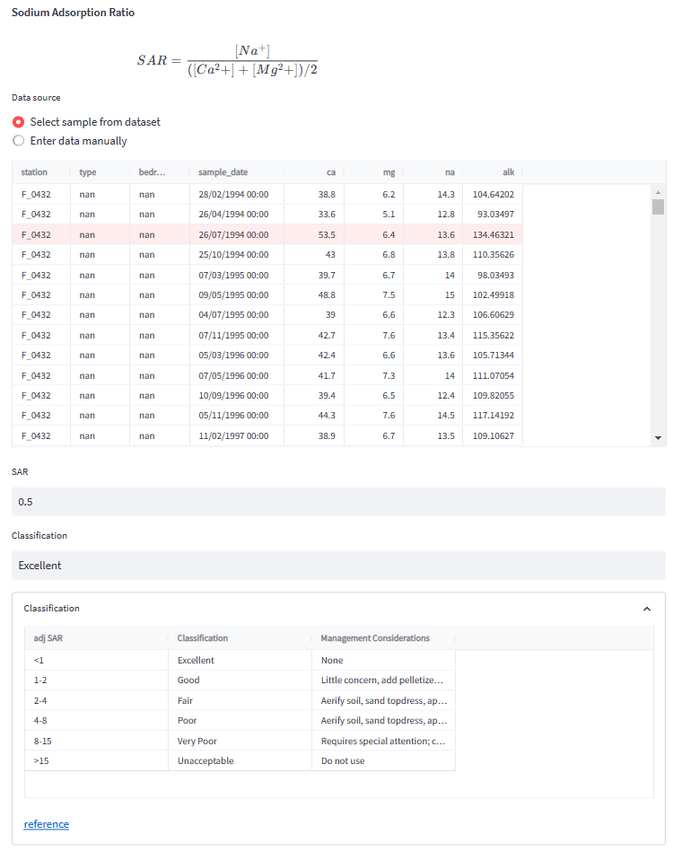
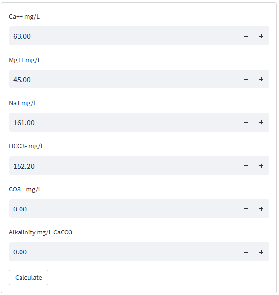

Irrigation Water quality
The chemical composition of irrigation water plays a crucial role in determining its quality and suitability for use in agriculture. In particular, the sodium content of irrigation water can have a significant impact on soil and plant health. High levels of sodium in irrigation water can lead to soil dispersion, making it difficult for plants to absorb essential nutrients. Additionally, high sodium levels in the soil can reduce the water uptake capacity of the roots, leading to drought stress in plants. Excess sodium can also accumulate in the soil over time, making it unsuitable for growing crops. For these reasons, it is important to carefully monitor the sodium content of irrigation water and take appropriate measures to manage it, such as blending the water with other sources or using sodium removal treatments. (Source: OpenAI GPT-3, 2023). Fontus calculates the Sodium Adsorption Ratio (SAR) and Residual Sodium Carbonate (RSC), two indicators commonly used for irrigation water quality analysis.
Sodium Adsorption Ratio (SAR)
The Sodium adsorption ratio (SAR) is an irrigation water quality parameter used in the management of sodium-affected soils. It is an indicator of the suitability of water for use in agricultural irrigation, as determined from the concentrations of the main alkaline and earth alkaline cations present in the water. It is also a standard diagnostic parameter for the sodicity hazard of a soil, as determined from analysis of pore water extracted from the soil.[wikipedia].
The formula for calculating the sodium adsorption ratio (SAR) is: $$ SAR = \frac{[Na^+]}{\sqrt{\frac{1}{2}(Ca^{2+} + Mg^{2+})}} $$
Fontus calculates the SAR value and classifies the value according to the following table published by the Oklahoma State University. Other countries may use different delimitations of SAR class boundaries and management recommendations.
| SAR | Classification | Management Considerations |
|---|---|---|
| <1 | Excellent | None |
| 1-2 | Good | Little concern, add pelletized gypsum periodically |
| 2-4 | Fair | Aerify soil, sand topdress, apply pelletized gypsum, monitor soil salinity |
| 4-8 | Poor | Aerify soil, sand topdress, apply pelletized gypsum, leach soil regularly, monitor soil salinity closely |
| 8-15 | Very Poor' | Requires special attention; consult water quality specialist |
| >15 | Unacceptable | Do not use |
The SAR calculator allows two different data input modes: - Select a sample from the dataset (default) - Enter all concentrations manually
The first option displays a list of samples from which the user can select. This list is only displayed if the dataset includes the required input parameters (Sodium, Calcium, and Magnesium). When a row is selected, the corresponding SAR result is calculated and shown below the table.  - The second option requires manual input for Sodium, Calcium and Magnesium:

The SAR has been combined with ta carboante satruation assessment ot produc an index refrerre to as the adjusted SAR (Adj. SAR) by Obwer, Ogata and Ticker 1968. It is defined as:
$$ adj.\ SAR = SAR · (1+(8.4-pH_c)) $$
where SAR is the SAR for irrigation water, 8.4 is the approximate pH of a non sodic saline soil in equilibrium with CaCO3, and pHC is the pH for which the inspected solution would be in equilibrium with calcite (J.W. Lloyd and J.A. Heathcote (1985). Fontus performs a PHREEQC simulation to calculate the equilibrium-pH.
Residual Sodium Carbonate (RSC)
The bicarbonate hazard is expressed by the residual sodium carbonate (RSC) where: $$ RSC = ([HCO_3 ^-] + [CO_3 ^2-]) - ([Ca^2+] + [Mg^2+]) $$ All units are in meq/L.
According to J.W. Lloyd and J.A. Heathcote (1985), the classification of RSC is outlined as follows:
| RSC (meq/L) | Condition |
|---|---|
| <1.25 | Suitable |
| 1.25 - 2.5 | Marginal |
| > 2.5 | Not suitable |